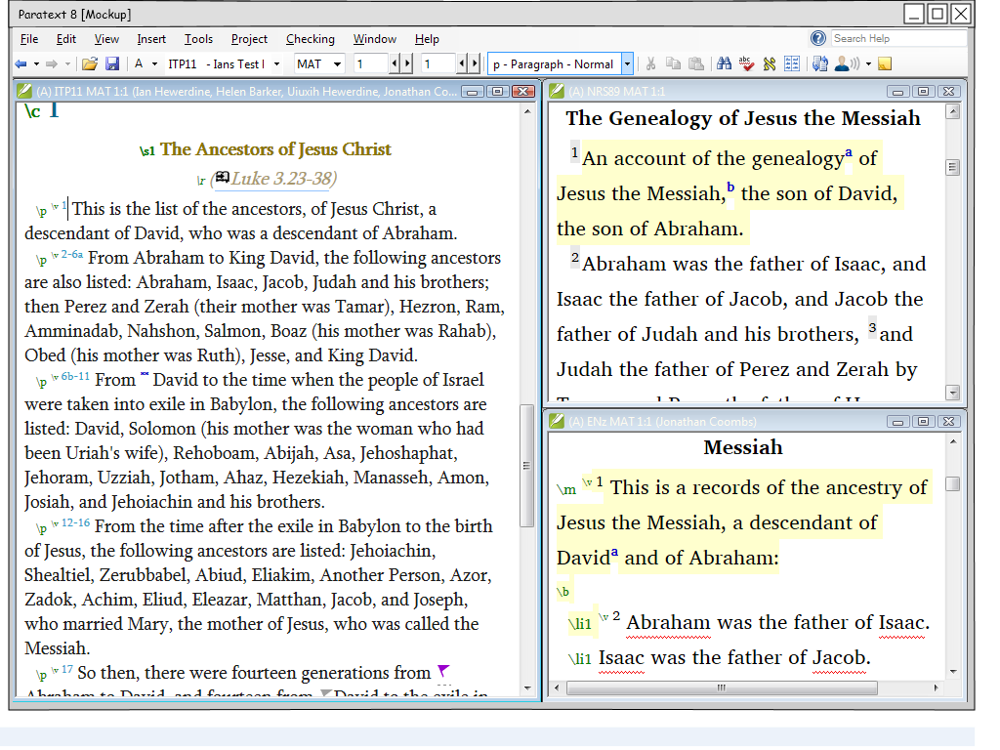
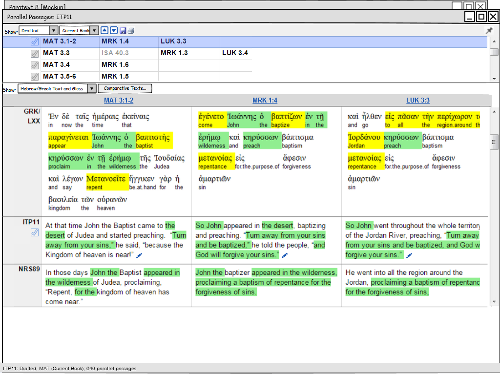
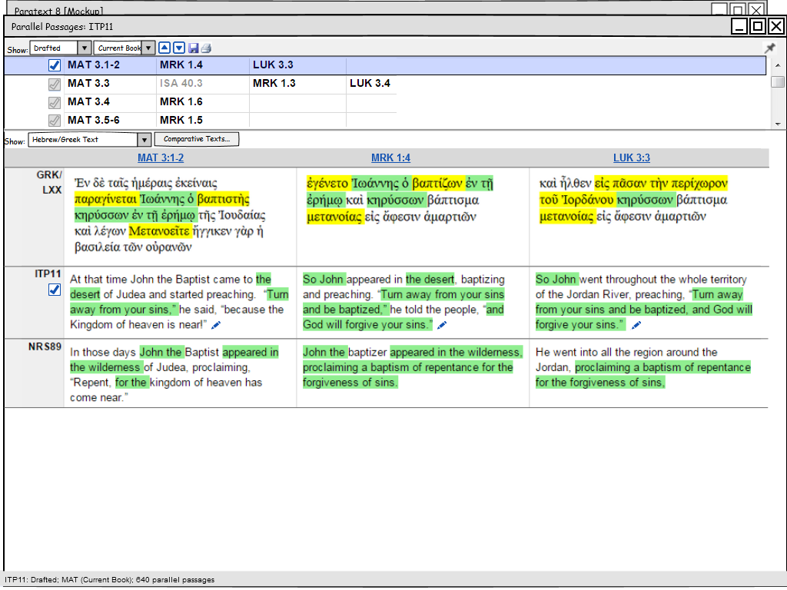

pp-wireframes.ep
Exported at: Thu Oct 08 2015 20:46:57 GMT-0500 (Central Daylight Time)
1. Verify appropriate parallelism with other books

3. Hide the Greek glosses

4. Approve these three as appropriately parallel
5. Review the next set of verses

6. Approve these ones too
7. Actually let's look closer at LUK in context first
8. Tweak the MRK text a little bit
Just pretend we edited then click Ok
9. Approve these ones again